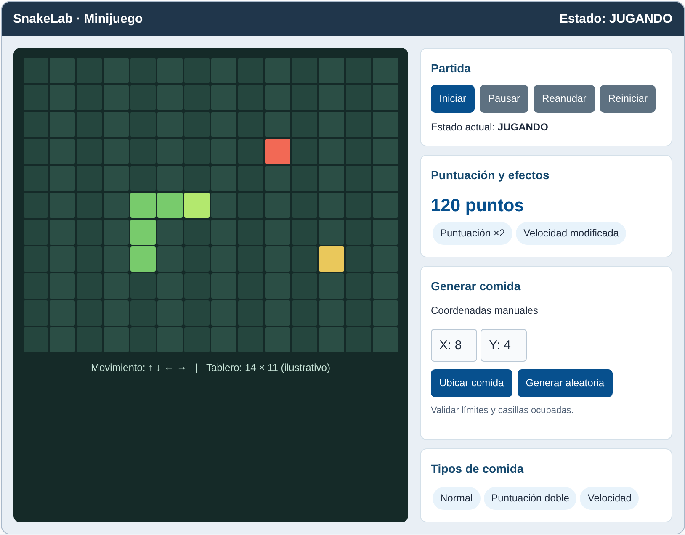

|
GUÍA DE PRÁCTICA DE LABORATORIO / TALLERES / CENTROS DE SIMULACIÓN — PARA DOCENTES | |||||||||||||||||||||||||||||||||||||||||||||||||||||||||||||||||||||||||||
| CARRERA: Computación | ASIGNATURA: Programación Aplicada | |||||||||||||||||||||||||||||||||||||||||||||||||||||||||||||||||||||||||||
| NRO. PRÁCTICA: | PL1.2 | TÍTULO PRÁCTICA: SnakeLab — Minijuego con patrones de diseño | ||||||||||||||||||||||||||||||||||||||||||||||||||||||||||||||||||||||||||
OBJETIVO
|
||||||||||||||||||||||||||||||||||||||||||||||||||||||||||||||||||||||||||||
| CONTEXTO |
Se requiere desarrollar SnakeLab, un minijuego de escritorio en Java Swing. Una serpiente se desplaza sobre un tablero de dimensiones definidas y cambia su dirección mediante las flechas del teclado. Al consumir comida, aumenta su longitud y la puntuación. La partida termina si la cabeza colisiona con los límites del tablero o con el cuerpo. La comida podrá colocarse introduciendo coordenadas X, Y o utilizando un botón que genere una posición aleatoria válida y libre. Se incluirán comida normal y alimentos especiales que activen los efectos de puntuación doble y modificación de velocidad. Problema de diseño: separar el comportamiento de los estados de la partida, incorporar efectos combinables mediante composición y justificar un patrón adicional sin concentrar la lógica en la ventana gráfica. El producto final será el código fuente, su documentación y un archivo
|
|||||||||||||||||||||||||||||||||||||||||||||||||||||||||||||||||||||||||||
| RECURSOS |
|
|||||||||||||||||||||||||||||||||||||||||||||||||||||||||||||||||||||||||||
| INSTRUCCIONES |
1. Aplicación que se debe construirDesarrollar un minijuego de escritorio denominado SnakeLab. Implementar una ventana principal que contenga el tablero, los controles de partida, el marcador, los efectos activos y el panel para generar comida. No se exige reproducir exactamente la apariencia del mockup; se verificará la funcionalidad requerida y la arquitectura de los patrones.
2. Generación de comidaIncorporar un selector de tipo de comida: Normal, Puntuación doble y Velocidad. Las dos operaciones siguientes deben utilizar el tipo seleccionado:
Permitir reemplazar la comida actual cuando se realiza una generación válida. Después de consumir una comida, una nueva posición podrá generarse desde los controles del panel. 3. Patrón State: comportamiento de la partidaImplementar un contexto de partida, por ejemplo
Obligatorio: encapsular en las clases de estado las decisiones relativas a operaciones y transiciones. La implementación no puede limitarse a una enumeración o a un conjunto de condiciones centralizadas en los listeners de Swing. Identificar las transiciones válidas e inválidas y su tratamiento. 4. Patrón Decorator: efectos sobre las reglasDefinir un contrato común para las reglas afectadas por los modificadores, por ejemplo, el puntaje
otorgado al consumir comida y el intervalo entre desplazamientos. Construir un componente base y un
decorador abstracto que lo envuelva, por ejemplo
Ambos efectos deben funcionar por separado y simultáneamente mediante anidación de decoradores. Definir y documentar una duración verificable para cada efecto, su activación al consumir el alimento especial y su finalización. Al pausar la partida, la duración de los efectos no debe avanzar. Obligatorio: los decoradores deben compartir el contrato del componente envuelto y
delegar las operaciones correspondientes. No sustituir el patrón por dos variables booleanas y un
5. Tercer patrón: selección y justificaciónSeleccionar e implementar un tercer patrón de diseño distinto de State y Decorator. No se restringe su clasificación; debe resolver una necesidad real de SnakeLab y formar parte del flujo de ejecución. Documentar el nombre del patrón, el problema que resuelve, sus participantes, las clases concretas, la relación con el resto del sistema y un caso de ejecución que demuestre su uso. No se aceptará únicamente un diagrama o clases que no intervengan en el juego. 6. Arquitectura y organizaciónSeparar la lógica del tablero, la serpiente, las reglas, los estados, los efectos y la interfaz Swing. Utilizar nombres de paquetes equivalentes a la siguiente propuesta, sin imponer nombres exactos de clases: src/main/java/ ├── app/ ├── modelo/ ├── juego/ ├── state/ ├── decorator/ ├── patronadicional/ └── vista/ La ventana debe capturar acciones y reflejar resultados; las reglas de estado, colisión, generación de coordenadas y efectos deben permanecer fuera de sus listeners. Elaborar un diagrama UML que represente los tres patrones y las relaciones entre sus participantes. Mockup de referencia. La imagen conserva la distribución propuesta del tablero, los botones, la puntuación, los efectos y el panel de coordenadas. Las dimensiones, posiciones y valores mostrados son ilustrativos.  7. JAR ejecutable y compatibilidad de Java
java -jar SnakeLab.jar Registrar en el java -version javac -version Indicar la versión con la que se compiló y la versión mínima de Java necesaria para ejecutar el archivo generado. Explicar cómo comprobar la versión del equipo de destino y qué hacer cuando es incompatible:
El JAR debe incluir o resolver correctamente las dependencias requeridas por el procedimiento documentado. 8. Trabajo colaborativoDesarrollar el proyecto en parejas, utilizando un repositorio remoto común. Registrar commits descriptivos por fases y conservar evidencia de cambios técnicos realizados por ambos integrantes. Registrar contribuciones al código de ambos integrantes y conocer el funcionamiento de los tres patrones, independientemente de la distribución de tareas. |
|||||||||||||||||||||||||||||||||||||||||||||||||||||||||||||||||||||||||||
ACTIVIDADES POR DESARROLLAR
Fase 1. Diseño y estructura
Commit orientativo: Fase 2. Mecánica y State
Commit orientativo: Fase 3. Decorator y patrón adicional
Commit orientativo: Fase 4. Distribución y validación
Commit orientativo: |
||||||||||||||||||||||||||||||||||||||||||||||||||||||||||||||||||||||||||||
CASOS DE ACEPTACIÓN
Evidencia: registrar para cada caso la entrada, el resultado esperado, el resultado real, el estado de cumplimiento y una referencia a captura o prueba. Los resultados deben proceder de la ejecución de la aplicación y no de imágenes simuladas. |
||||||||||||||||||||||||||||||||||||||||||||||||||||||||||||||||||||||||||||
RÚBRICA
Condiciones de evaluaciónCada criterio se evaluará considerando 50 % de implementación y evidencias y 50 % de defensa individual. El puntaje de cada criterio se obtiene multiplicando su valor máximo por la suma ponderada de ambos componentes. Puntaje del criterio = Máximo ×
(0.50 × Implementación + 0.50 × Defensa)
Los niveles de implementación y defensa se expresan mediante valores entre 0 y 1. El resultado de la defensa podrá ser distinto para cada integrante de la pareja. Un proyecto funcional no garantiza la calificación máxima si no se demuestra conocimiento del código. Aplicación de la rúbrica: los descriptores Completo, Parcial y No logrado corresponden a la evidencia de implementación. El componente de defensa se valora por separado con la siguiente escala. Niveles de valoración de la defensa
|
||||||||||||||||||||||||||||||||||||||||||||||||||||||||||||||||||||||||||||
| ENTREGABLES |
La entrega se realizará en el AVAC mediante el enlace al repositorio remoto compartido por la pareja. El repositorio debe contener:
Estructura orientativa del repositorio: SnakeLab.jar README.md src/ docs/ mockup.png diagrama-clases.png evidencias/ PL1.2.md capturas/ Conservar los nombres |
|||||||||||||||||||||||||||||||||||||||||||||||||||||||||||||||||||||||||||
| RESULTADOS OBTENIDOS |
Documentar los resultados reales de los casos de aceptación en una tabla con ID, operación o entrada, resultado esperado, resultado obtenido, estado y evidencia. Registrar expresamente los casos fallidos y su causa. Incluir capturas del tablero, generación de comida manual y aleatoria, estado Pausado, aplicación simultánea de ambos decoradores, ejecución del tercer patrón y apertura del JAR desde terminal. |
|||||||||||||||||||||||||||||||||||||||||||||||||||||||||||||||||||||||||||
| DEFENSA |
Defensa individual de la prácticaLa defensa será individual, aunque el desarrollo y el repositorio sean compartidos. Se deberá demostrar conocimiento del funcionamiento general del proyecto y de sus tres patrones. Durante la defensa, el docente podrá solicitar:
La defensa representa el 50 % de la puntuación máxima de cada criterio. No será suficiente ejecutar la aplicación o describir únicamente los controles de la interfaz; deberá identificarse y explicarse el código entregado. |
|||||||||||||||||||||||||||||||||||||||||||||||||||||||||||||||||||||||||||
| CONCLUSIONES |
Redactar al menos tres conclusiones fundamentadas en resultados verificables. Analizar la utilidad de State para controlar las transiciones, la composición de efectos mediante Decorator, el aporte del tercer patrón y los límites de distribución o compatibilidad del JAR. Relacionar cada conclusión con decisiones de diseño o casos ejecutados. |
|||||||||||||||||||||||||||||||||||||||||||||||||||||||||||||||||||||||||||
| RECOMENDACIONES |
Implementar y verificar primero la lógica de movimiento y los patrones fuera de la vista. Separar responsabilidades, definir resultados reproducibles para casos límite y comprobar la ejecución del JAR desde una terminal. Registrar cambios técnicos en Git con mensajes claros y mantener actualizados el UML, las evidencias y el README. |
|||||||||||||||||||||||||||||||||||||||||||||||||||||||||||||||||||||||||||
Docente / Técnico Docente: Ing. Pablo Torres, Mgtr.
Firma: _______________________________